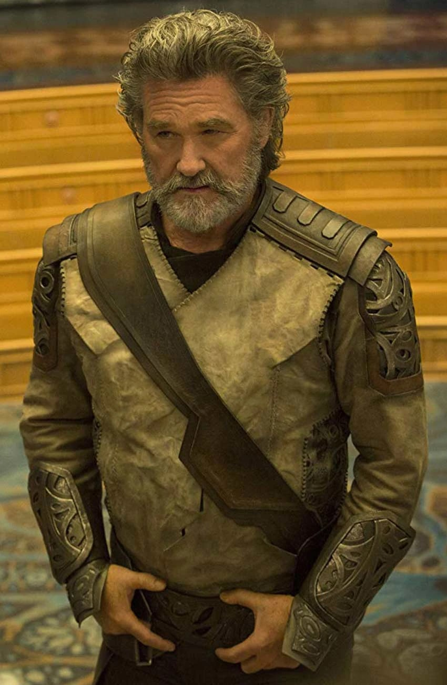
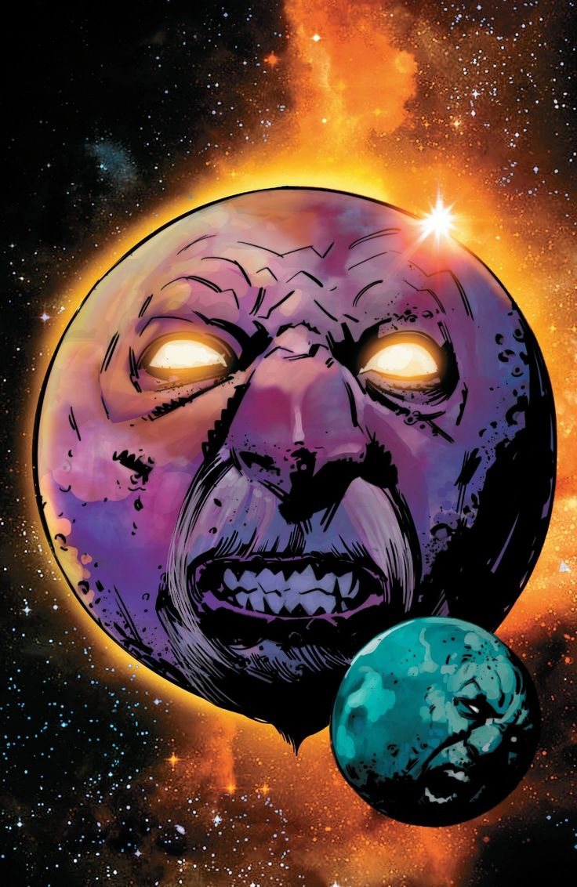
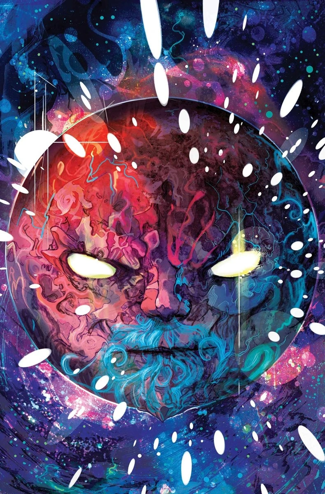
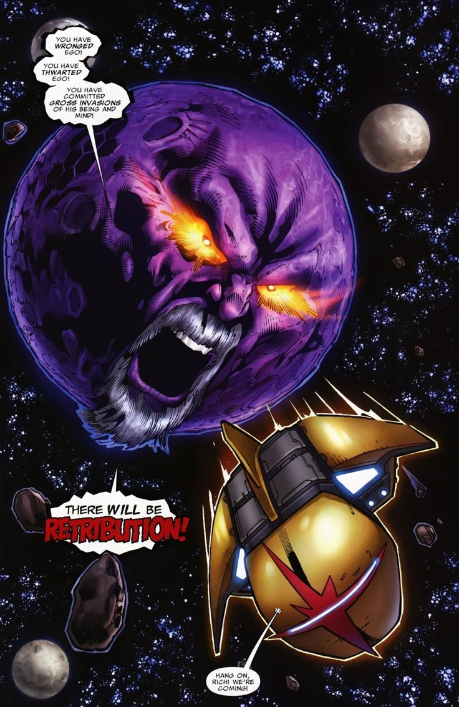
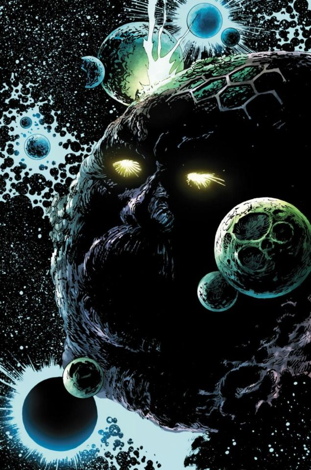
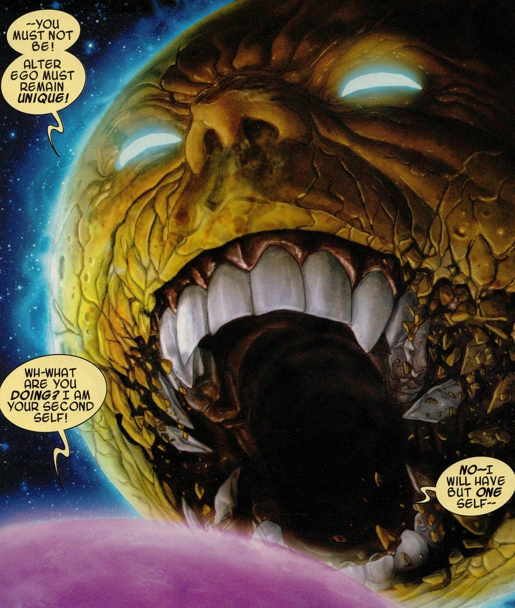
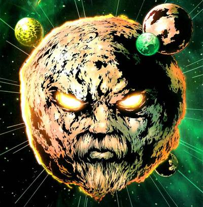
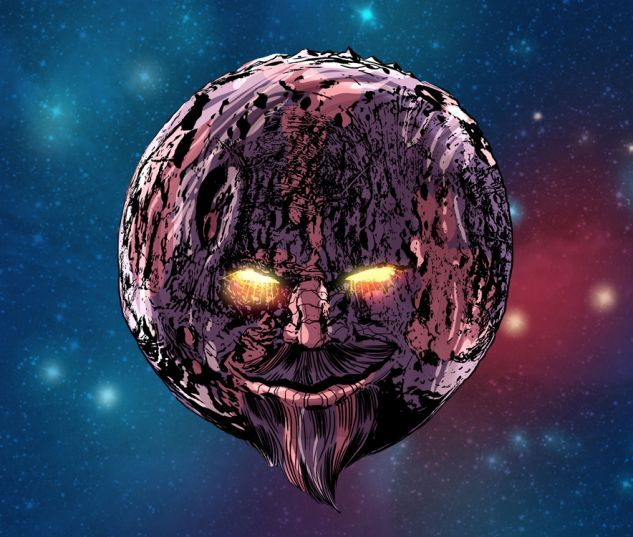
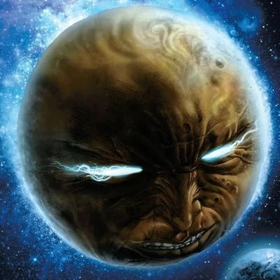

Ego, la Planète Vivante (Terre-616)

Origines :
Il y a très longtemps, le mystérieux être cosmique connu sous le nom d'Étranger visita son étoile natale pour mener une expérience qui finirait par la faire exploser en nova et détruire les planètes jumelles orbitant autour d'elle, et le scientifique nommé Egros commença à travailler sur un moyen de sauver son espèce de son destin funeste imminent.
A la veille de la destruction, Egros fit évacuer son peuple vers des bunkers qu'il avait aménagés au cœur de la planète pour les protéger, mais la situation se dégrada rapidement alors que le soleil explosa en nova bien plus tôt que prévu.
N'ayant plus le temps de sceller les chambres et d'assurer la survie de son peuple, Egros tenta en vain d'atteindre la chambre forte souterraine avant que l'onde de choc solaire ne le frappe.
Cependant, ce n'était pas la fin pour lui, et Egros fut bientôt fusionné avec tous les êtres vivants détruits par le soleil, y compris son peuple, par l'Étranger pour créer Ego, la Planète Vivante.
Au fil du temps, les ambitions d'Ego se tournèrent vers la conquête.
Il commença à absorber des vaisseaux spatiaux ainsi que d'autres mondes pour survivre.
Les Rigelliens, craignant qu'Ego ne prenne leur planète pour cible, tentèrent de coloniser la Terre.
Thor s'y opposa dans un premier temps, mais accepta de combattre Ego à leurs côtés après qu'ils eurent expliqué leur situation.
Thor s'aventura dans la Galaxie Noire accompagné de l'Enregistreur Rigellien 211.
Une fois arrivé sur la Planète, Ego se créa un avatar de taille humaine pour mieux interagir avec le Dieu du Tonnerre.
Ego révéla qu'il attendait l'arrivée d'un être aussi puissant que Thor afin de tester les forces de ses Anticorps, qu'il comptait envoyer à travers l'univers pour l'aider à conquérir d'autres mondes.
Thor défia Ego avec audace, qui répliqua en le forçant à pénétrer dans son corps et en lui lançant une vague quasiment infinie d'Anticorps.
Après leur avoir échappé, Thor invoqua une puissante tempête qui étourdit Ego.
Ce dernier se rendit et jura de sceller la Galaxie Noire au reste de l'univers connu.








Capacités :
Chaque partie de la substance d'Ego, y compris son atmosphère, est vivante tant qu'elle est contrôlée par la conscience d'Ego.
Il possède un contrôle total sur son atmosphère et sur sa masse, et peut modifier sa surface et son cœur à volonté jusqu'au niveau moléculaire.
Il est capable de reformer sa propre substance en tentacules, en senseurs, mais aussi en serviteurs (des corps humanoïdes) qu'il surnomme ses « Anticorps ».
Il possède également un puissant pouvoir psionique, grâce auquel il peut générer des décharges d'énergie cosmique ou communiquer de manière télépathique avec d'autres individus.

Apparence :
Ego est un gigantesque planétoïde d'environ 6 700 km de diamètre, dont la surface est entièrement organique.
Son élément le plus caractéristique est son gigantesque visage humanoïde qu'il fait apparaître à sa surface pour s'adresser à d'autres êtres.
Ce visage est généralement composé des roches ou des végétaux qu'il fait pousser à sa surface, ainsi que des yeux lumineux, un large nez et une bouche expressive capable d'afficher toute sorte d'émotions.